GitHub Pages+Hexo搭建个人博客
Hexo是一个静态博客，可以将我们所写的Markdown格式的文章渲染成Html网页。而GitHub Pages是GitHub的一个功能，它允许我们将静态网页上传到GitHub仓库，并且给我们一个域名访问。这两者结合起来，不需要服务器就可以免费搭建一个个人博客
0x01 环境准备
在正式搭建博客之前，我们需要准备好以下的环境
1.1 安装Git
首先到官网下载Git的安装包
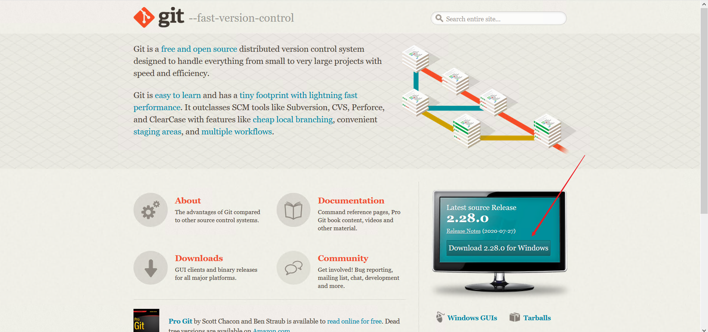
安装过程没有什么需要特别设置的，一直点next就可以。安装完成之后找个空白的地方右键，如果能看到这两个东西，说明安装成功
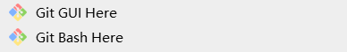
安装完成后打开Git Bash，输入以下命令设置用户名和邮箱，它们的作用只是用来标记身份，可以不是真实的
1 | git config --global user.name "<用户名>" |
1.2 安装Node.js
到官网下载Node.js的安装包
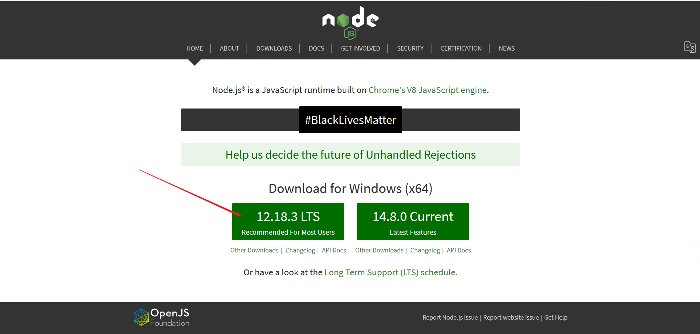
跟Git一样，也是一直点next就可以。安装完成之后在cmd输入npm -v查看版本号，如果能看到版本号，说明安装成功
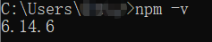
1.3 注册一个GitHub账号
注册过程跟一般网站没什么区别，就不详细写了。GitHub的地址：https://github.com
0x02 安装Hexo
首先新建一个文件夹，作为博客的目录。然后进入文件夹，在文件夹内右键，选择Git Bash Here，进入Git的命令行
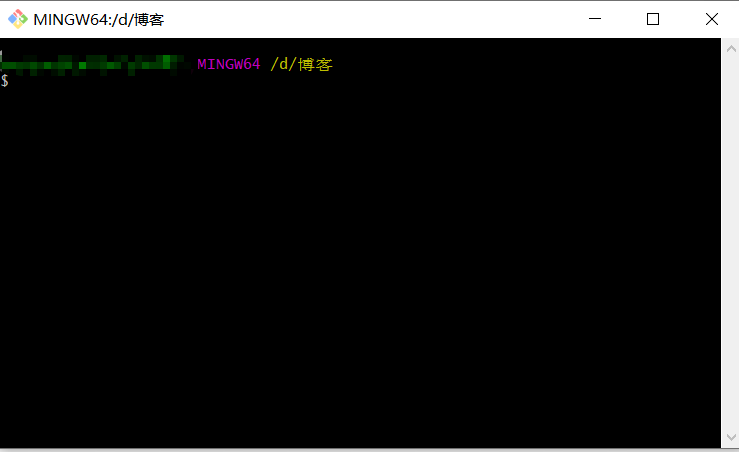
输入以下命令安装Hexo
1 | npm install -g hexo-cli |
安装完成后输入hexo -v可以看到版本信息
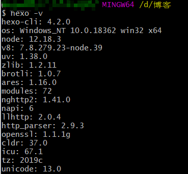
0x03 初始化Hexo
在Git Bash输入下面的命令初始化Hexo
1 | hexo init <博客名称> |
初始化完成之后，会在当前目录下新建一个<博客名称>文件夹，进入这个文件夹，这些就是Hexo的所有文件
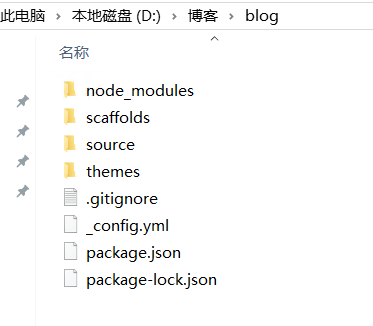
0x04 写一篇文章
在<博客名称>文件夹内打开Git Bash，输入以下命令新建一篇文章
1 | hexo n <文章名称> |
可以看到在<博客名称>/source/_post目录下，新建了一个<文章名称>.md的文件
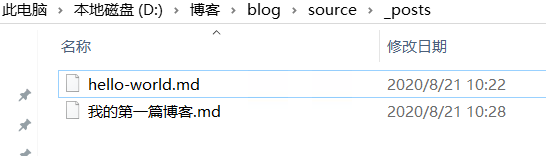
文章的内容如下，被---包裹着的是给Hexo看的信息，title是显示在首页的标题，date是文章的创建日期，tags是文章的标签。文章的正文写在下面，用普通的Markdown语法编写
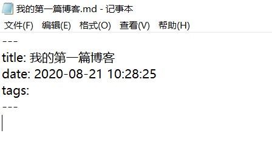
0x05 本地预览博客
写完文章，该看看效果了，在<博客名称>文件夹内的任意地方打开Git Bash，依次输入以下命令
1 | hexo clean # 删除之前生成的Html文件 |
打开浏览器，在地址栏输入localhost:4000然后回车，可以看到博客已经被部署好了，我们写的Marndown文档被渲染成了Html的样式
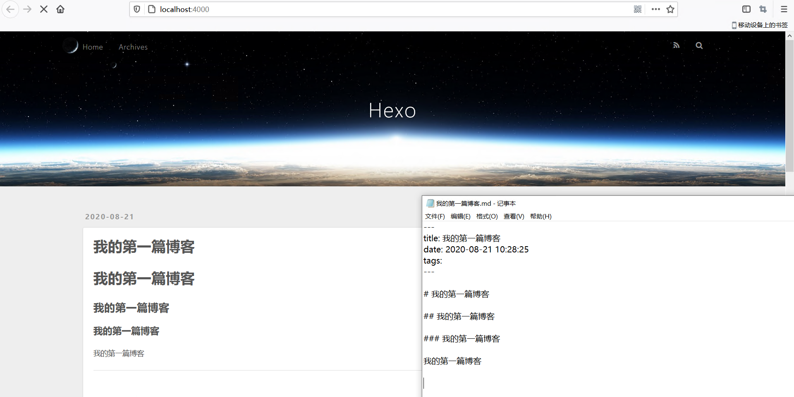
0x06 部署到GitHub
文章也写了，预览也看过了，现在是最后一步，将博客部署到GitHub上
6.1 新建一个GitHub Pages仓库
新建一个仓库，命名为<你的GitHub用户名>.github.io。然后进入仓库，点击Settings，找到GitHub Pages栏目，根据提示开启GitHub Pages
6.2 配置Hexo
在<博客名称>文件夹下打开Git Bash，输入以下命令安装Hexo的Git扩展
1 | npm install hexo-deployer-git --save |
打开<博客名称>/_config.yml文件，这是Hexo的配置文件，找到图中红框的部分，将下面的配置写进去
1 | # Deployment |
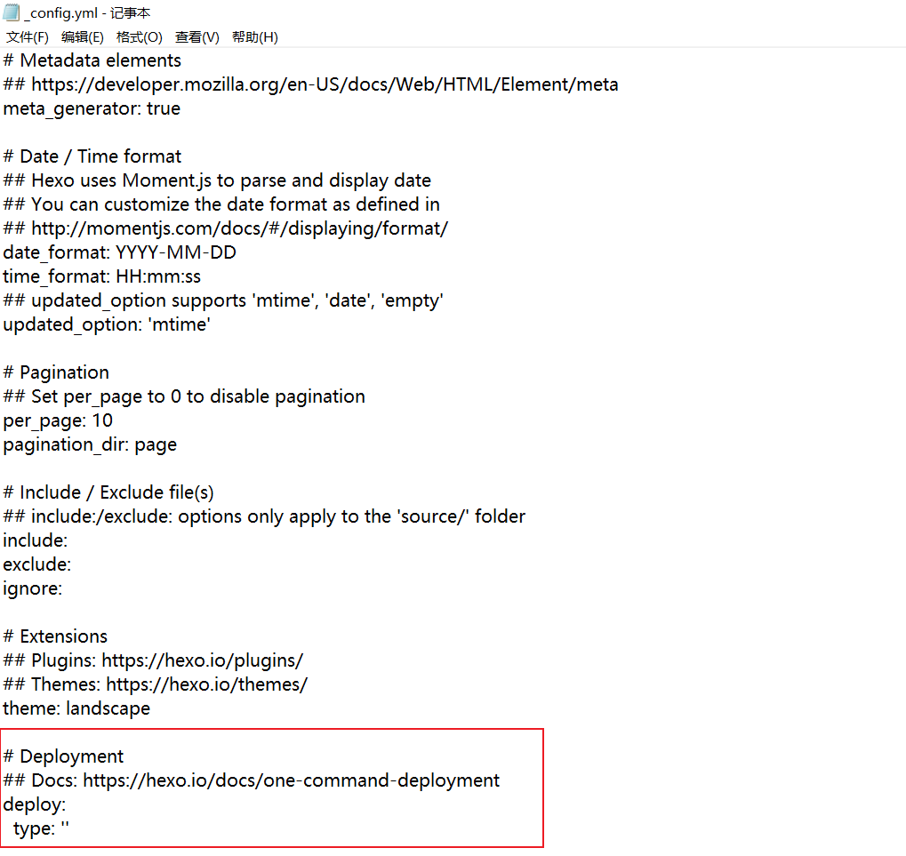
6.3 上传
跟预览的命令差不多，只是最后一步的预览变成了部署到GitHub
1 | hexo clean # 删除之前生成的Html文件 |
0x07 主题
经过很多次的更换主题，我认为下面这三个主题是最好用的，这里只给出主题的地址，具体的配置在里面都有详细的文档说明。如果有更多的对Hexo定制需求，可以参考Hexo官方文档